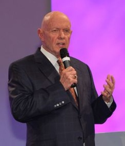

Stephen Richards Covey (Salt Lake City, Utah, Estados Unidos, 24 de octubre de 1932 - Idaho Falls, Idaho, Estados Unidos, 16 de julio de 2012) fue un licenciado en administración de empresas, escritor, hacedor de frases, conferenciante, religioso y profesor estadounidense conocido por ser el autor del libro superventas: Los siete hábitos de las personas altamente efectivas.
Covey fue el fundador de lo que anteriormente se denominaba «Covey Leadership Center», (Centro Covey de liderazgo) en Salt Lake City, Utah, institución que fue luego adquirida por la compañía FranklinQuest, el 30 de mayo de 1997 convirtiéndose en «FranklinCovey Company», una compañía que ofrece servicios profesionales y cuya especialidad consiste en vender cursos y seminarios de formación para la gestión de negocio , herramientas para aumentar la productividad, así como también la Gestión del Tiempo, tanto para individuos como para organizaciones.